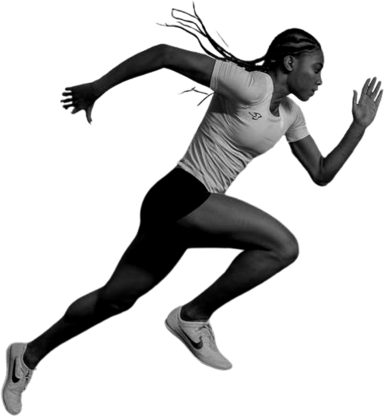
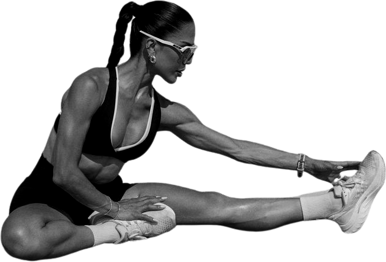
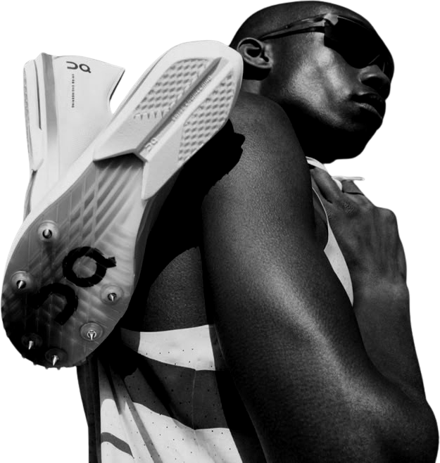
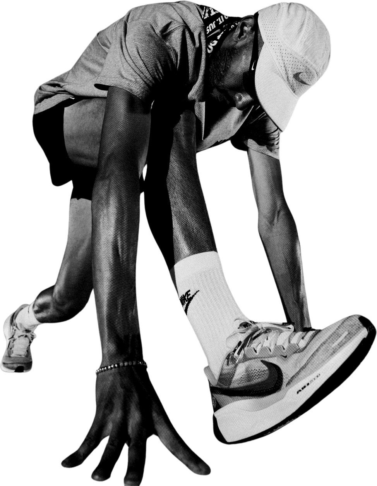

Fourteen of every twenty covers. One cutout runner, whole body, placed from 00-assets/cutouts/cutouts.json: the figure faces into the headline, the word behind it is occluded by no more than 40% of any glyph, and the word in front of it, the kicker and the mark sit on clear ground. Three headline modes on navy and on white, a different cutout in each.
MINDSET · WEEK 12
SHOW

UP.
01 · SHOUT · NAVY · SPRINT START, RUNS INTO THE WORD · SIGNAL CHIP
CUTOUT · fig-sprint-start · MIRRORED
STOP TEST 5 / 5Thumbnail: two words at 300 read at 120px.One idea: show up.Tension: first stride out of the blocks, driving into the headline.Signal: once, as the kicker chip.Gap: shows up for what — the deck answers.
RUNNING 101 · EASY DAYS
pace is not
slow enough.

Your easy
02 · SENTENCE · NAVY · HAMSTRING REACH, FACING THE LINES
CUTOUT · fig-seated-reach-side · MIRRORED
STOP TEST 5 / 5Thumbnail: three short lines at 140 hold up.One idea: easy is not easy enough.Tension: a long reach to the shoe, pointing at the words.Signal: deliberately absent.Gap: how slow is slow enough.
PERCENT OF YOUR WEEK, EASY
80
03 · NUMBER · NAVY · QUAD STRETCH, LOOKING AT THE NUMERAL
CUTOUT · fig-quad-stretch · MIRRORED
STOP TEST 5 / 5Thumbnail: two digits at 640 are unmissable.One idea: the 80 percent rule.Tension: balanced on one leg, native size, clear of the numeral.Signal: deliberately absent.Gap: 80 percent of what.
GEAR · LACE TENSION
GO
NOW.
04 · SHOUT · WHITE · TYING, BOTTOM RIGHT · SIGNAL BLOCK
CUTOUT · fig-tying · MIRRORED
STOP TEST 5 / 5Thumbnail: GO over NOW. above the crouch carries at 120px.One idea: go now.Tension: crouched, mid-knot, rising into the words.Signal: once, as a fill block with black type.Gap: go now after what — the deck answers.
RACING · THE LAST 3K
decides

The last 3K
the race.
05 · SENTENCE · WHITE · SHOULDER TURN, LEFT BLEED
CUTOUT · fig-shoe-shoulder
STOP TEST 4 / 5Thumbnail: right-aligned block reads small.One idea: the race is decided late.Tension: shoulder turned toward the words, spikes carried.Signal: deliberately absent.Gap: decided how.
KILOMETRES, PLUS 195 METRES

42
06 · NUMBER · WHITE · BENT DOUBLE UNDER THE DISTANCE
CUTOUT · fig-bent-over
STOP TEST 5 / 5Thumbnail: 42 at 640 clear above the figure, legible at any size.One idea: the marathon distance.Tension: bent double, hand to the ground, spent.Signal: deliberately absent.Gap: why the 195 metres.